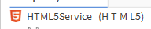
The HTML5 Service can be added to a station to help you create and modify the standard navigation bar/header/HTML wrapper
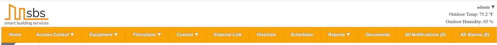
Copy the latest version of the SBSTools modules to your workbench (typically C:\Niagara\"NiagaraVersion"\modules) and into the modules directory of whichever station (JACE or Server) you are using them. Workbench will have to be restarted for the new modules to show up. You also may have to stop the niagara service/daemon before it will let you copy the files in.
Then open the SBSTools Palette. Once open drag the HTML5Service to your station under services.
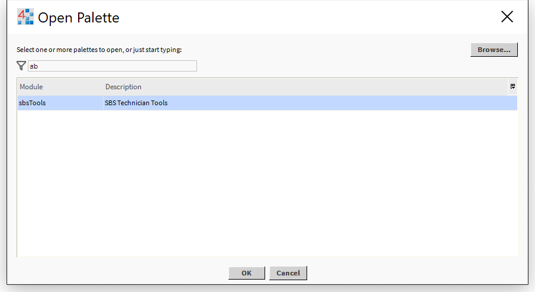
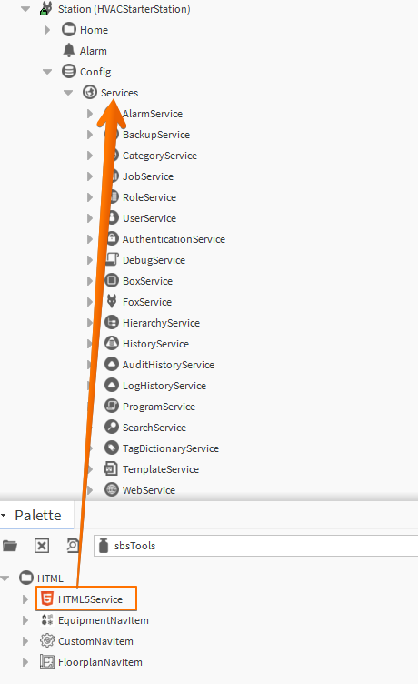
This slot will update each time HTML is generated.
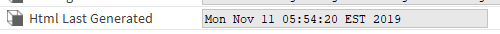
This is the folder where all files will be created. You can leverage the HTML5Service to create multiple user interfaces by adding additional instances of the service with different folder paths.
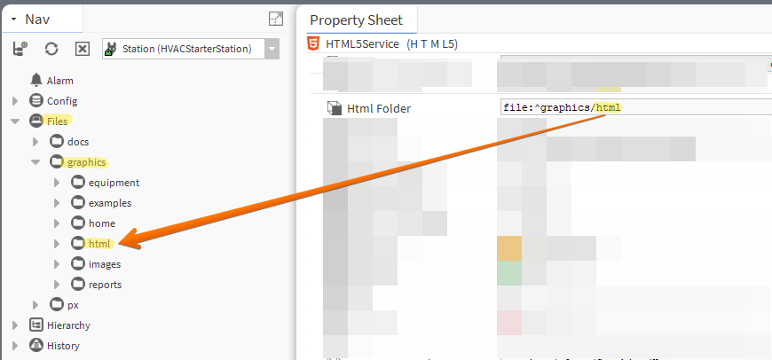
Put the site name here. This is what shows up as the "title" in a web browser.
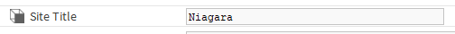
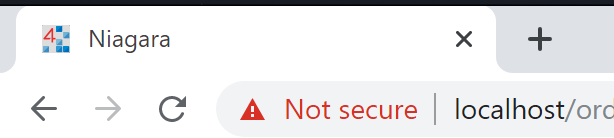
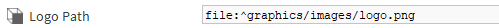
Paste logo path here. Use .png images and scale them to an appropriate size before loading into Niagara.
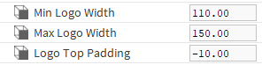
The is the smallest your logo will get when scaling on mobile.
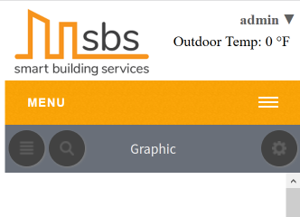
The is the largest your logo will get - how it will be displayed in most web browsers.
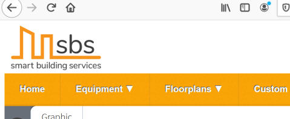
The sets the vertical alignment of the logo
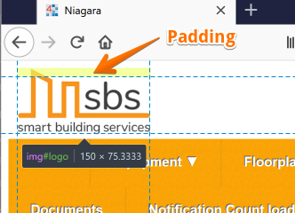
Select your desired nav bar color here using the color picker or and HTML/RGB color code. Use a color that matches the customers logo/styling.
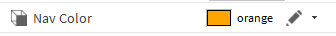
Set to true if you have and would like to display outside air temperature in the header.
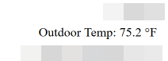
Link from your OAT to this slot. I recommend using a global OAT.
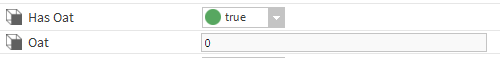
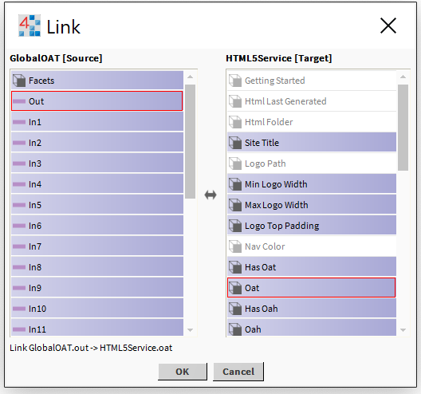
Set to true if you have and would like to display outside air humidity in the header.
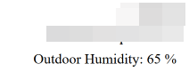
Link from your OAH to this slot. I recommend using a global OAH.
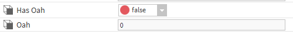
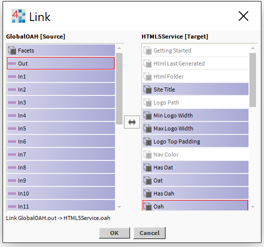
This is where the home page is defined. Do NOT link directly to a px file, must be a folder or device or anything else within the config of the station not under files.
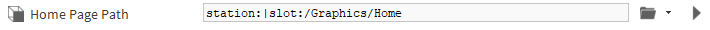
Set to true if site has enterprise security. This determines if the Access Control Nav item is shown, and determines which schedule link is used. For enterprise security the schedules under the EnterpriseSecurityService will be used, for HVAC the schedule folder under drivers will be used.
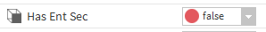
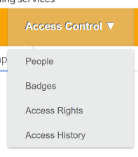
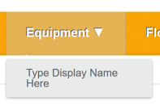
Set to true if you have and would like to display an equipment list in the nav bar. After setting to true go to actions -. Generate HTML to add the Equipment List to the service.
This is the display name your equipment list will show in the nav bar.
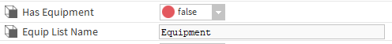
Will be automatically added to your service when Has Equipment is set to true and HTML is generated. Will also be automatically removed when Has Equipment is set to false and HTML is generated.
For each piece of equipment you would like to display in the nav bar dropdown you need to drag an EquipmentNavItem from the palette to the EquipmentList component.
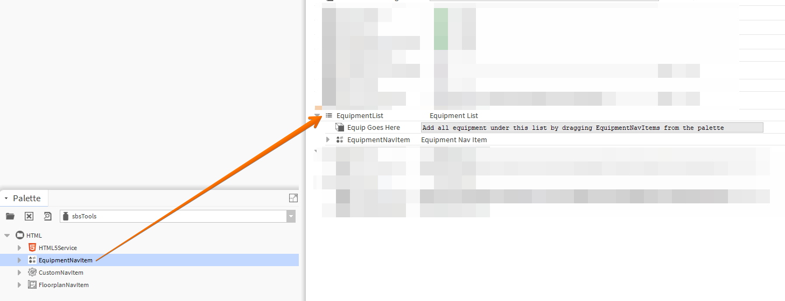
This is the display name your equipment will show in the nav bar.
Link to your equipment here.
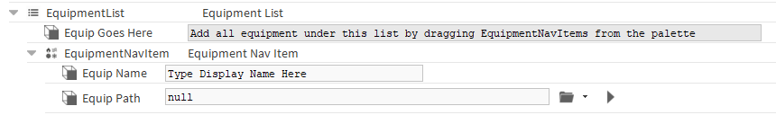
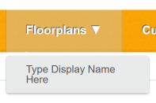
Set to true if you have and would like to display floorplans in the nav bar. After setting to true go to actions -. Generate HTML to add the Floorplan List to the service.
This is the display name your floorplan list will show in the nav bar.
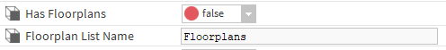
Will be automatically added to your service when Has Floorplans is set to true and HTML is generated. Will also be automatically removed when Has Floorplans is set to false and HTML is generated.
For each floorplan you would like to display in the nav bar dropdown you need to drag a FloorplansNavItem from the palette to the FloorplanList component.
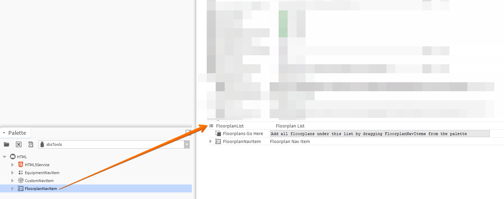
This is the display name your floorplan will show in the nav bar.
Link to your floorplan here.
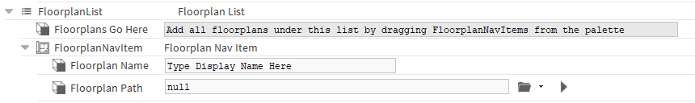
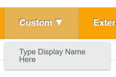
Set to true if you have and would like to display a custom list in the nav bar. After setting to true go to actions -. Generate HTML to add the Custom List to the service.
This is the display name your custom list will show in the nav bar.
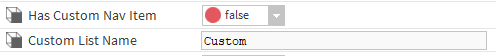
Will be automatically added to your service when Has Custom Nav Item is set to true and HTML is generated. Will also be automatically removed when Has Custom Nav Item is set to false and HTML is generated.
For each custom item you would like to display in the nav bar dropdown you need to drag an CustomNavItem from the palette to the CustomList component.
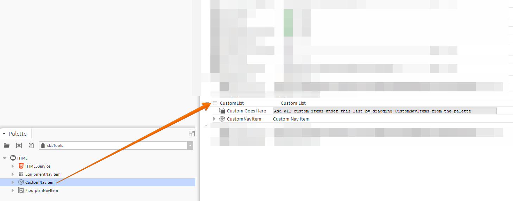
This is the display name your custom item will show in the nav bar.
Link to your custom item here.
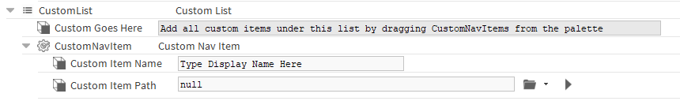
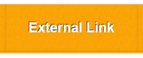
Set to true if you have and would like to add an external link in the nav bar.
This is the display name your external link will show in the nav bar.
Link to your external item here. External links will always open in a new tab.
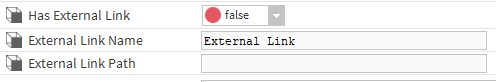
Set to true if you would like a histories link in the nav bar. Links go the standard history chart builder.
Set to true if you would like a schedules link in the nav bar. Links to either the folder below or the standard Enterprise Security Schedule path
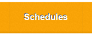
This path is only used when "Has Ent Sec" is set to false. Do NOT link directly to a px file, must be a folder or device or anything else within the config of the station not under files.
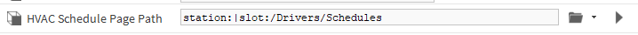
Set to true if you would like a Standard Reports link in the nav bar. Links to standard reports - get them from a starter station or the starter components folder on the drive.
Set to true if you would like a Documents link in the nav bar. Links to the standard docs location -> file:^docs
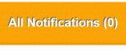
Set to true if you have and would like to display a notification console.
Link from your Notification count to this slot. I recommend using a numeric unit converter with precision set to 0. This will animate when count > 0.
Link to your notification console here.
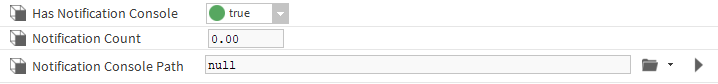
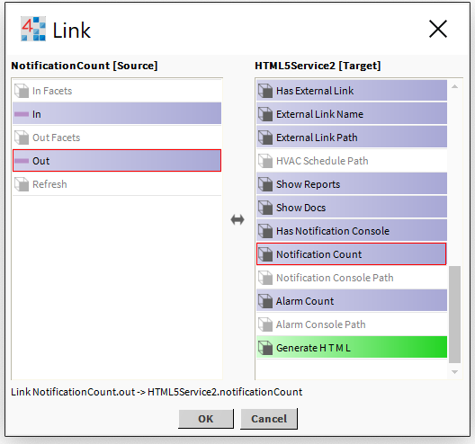
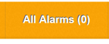
Link from your Notification count to this slot. I recommend using a numeric unit converter with precision set to 0. This will animate when count > 0.
Link to your alarm console here.
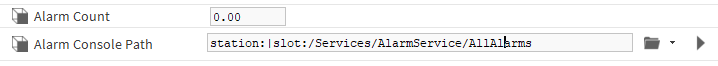
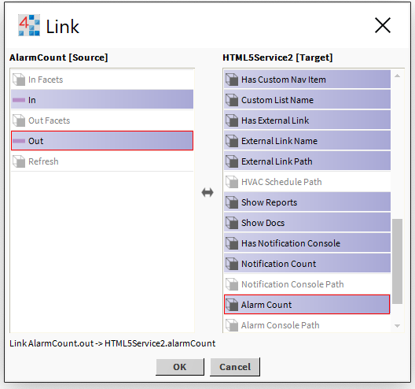
Under actions - choose Generate HTML. This will generate all of the necessary html5 files. You will need to set your nav file to look at graphics/html5/index.html5.
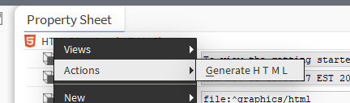
A NAV file will be created in the html5 folder specified earlier. Assign this NAV file to your users and setup the user profiles as shown in the image below.
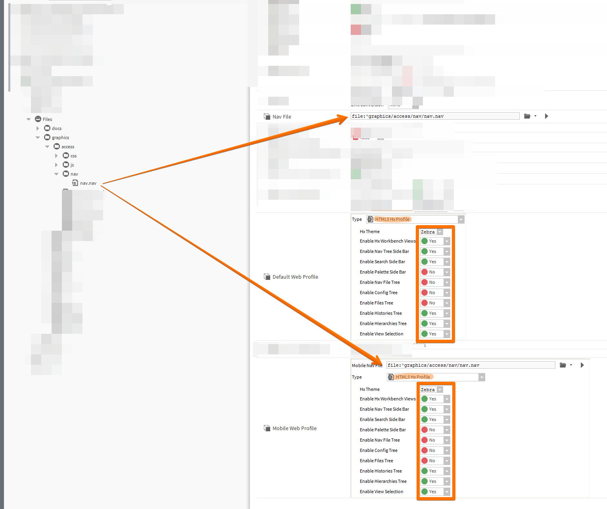